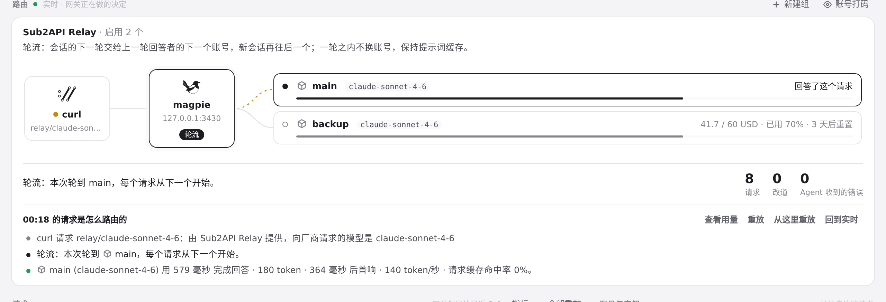
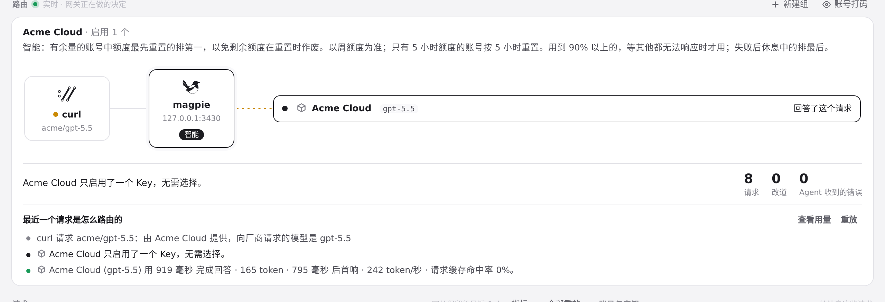
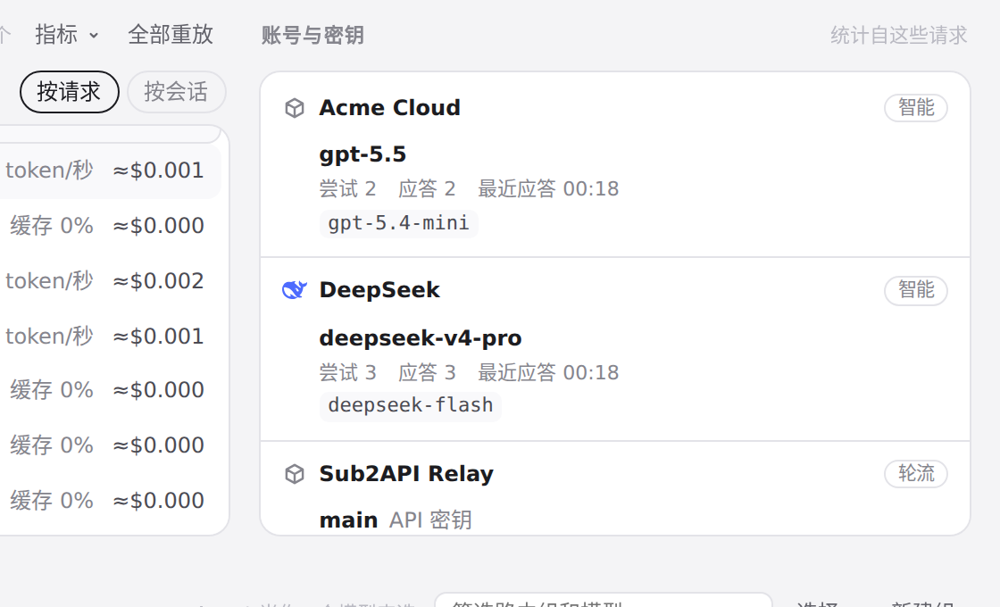

#1064 界面预览
commit 7e7a478 · 回到 PR · 路由页的环节头部此前对「按权重」路由的供应商会退回显示「智能」：routing.js 的 MODES 表缺少 weight 项。此 diff 只在 MODES 中加入 weight 条目（复用供应商编辑器已有的「按权重」及说明文案），使环节头部的标签、下面的模式说明，以及「账号与密钥」下该供应商的路由名都按权重的说法显示；其余不变。
红线是鼠标走过的轨迹，红色圆环是一次点击；底部文字是这一步在做什么。空格暂停，← → 逐段查看。
环节头部的路由标签与模式说明 · 路由页环节：请求列表里当前打开的这条请求

环节头部的路由标签与模式说明 · 环节头部：magpie 节点上的路由标签与它下面的模式说明

环节头部的路由标签与模式说明 · 换成另一家供应商后，同一处的路由标签与模式说明

账号与密钥里各供应商的路由名 · 「账号与密钥」里每个供应商名后面的路由名